Morpho Welcome Screen
After you have created a profile, you will see Morpho's 'Welcome' screen:
There are three panels on the left side of the screen - the 'Profile' panel, 'Login' panel, and 'Work with your data' panel. These are discussed in detail below:
Welcome Screen - 'Profile' Panel
The top panel title-bar shows the current profile setting. You can use the drop-down list to change profiles, or you can click on the link to create a new profile:
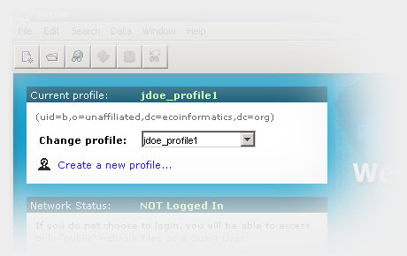
Welcome Screen - 'Login' Panel
The middle panel shows your login status. If you status is "NOT Logged In", you can type your password in the "password" field and click the "Login" button to login to the KNB network. You will be logged in with the username from the current profile:
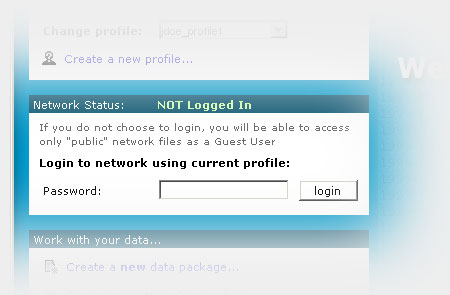
If you are already logged in, you will see the following panel contents:
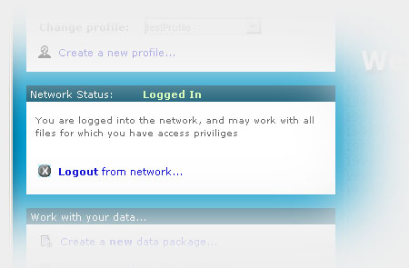
Clicking on the "logout" link will log you out of the KNB network
Welcome Screen - 'Work with your data...' Panel
The bottom panel, entitled 'Work with you data...' contains clickable links which allow you to:
- Create a new data package,
- Open an existing data package, or
- Search for an existing data package (both locally and on the KNB network)
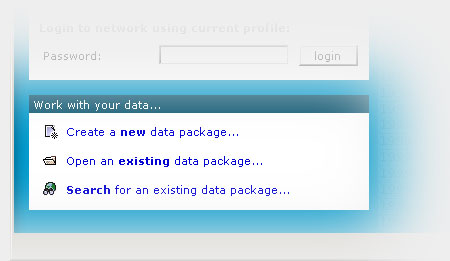
! If you are not logged in, the only network data packages that will show up in your search are those which have "public" access privileges.
Main Menus
The menus at the top of each morpho screen allow you to access all the operations that are currently available in Morpho.
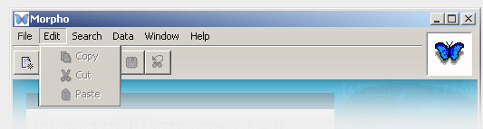
Items will sometimes appear grayed out, meaning they are not available for the current data package at this time (for example, copy and cut will be disabled on the Edit menu if you do not currently have anything selected)
Main Toolbar
The toolbar contains 'shortcut' buttons to commonly-used commands. The same commands can also be accessed using the menus, as described above.
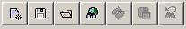
| 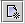 | The new data package button starts a wizard that will guide you through the process of creating your own data package |
| 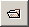 | The open package button allows you to open an existing data package (provided you have adequate access permissions). |
| 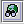 | The search button begins the data package search process. |
| 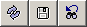 | The next three buttons are enabled only when the frame contains the results of a search. The allow you to refresh the search, save the search for future use, or revise the search by changing the search parameters. |
Status Bar
The status bar contains information about the current status of various Morpho settings and parameters. For example, when search results are displayed, the number of 'hits' is shown on the left end of the status bar
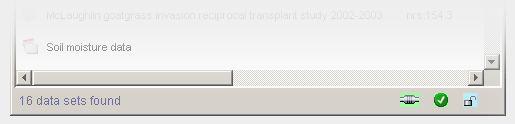
The three icons at the right end of the status bar indicate the following:| Network Status |
|
||
| Login Status |
|
||
| Security |
|
* Note that Morpho does not currently support SSL connections.
Data Packages
Morpho uses the term "Data Package" to describe a set of metadata and /or data. After you open an existing data package you will see the data package contents represented by a "Data Package" screen, illustrated below.
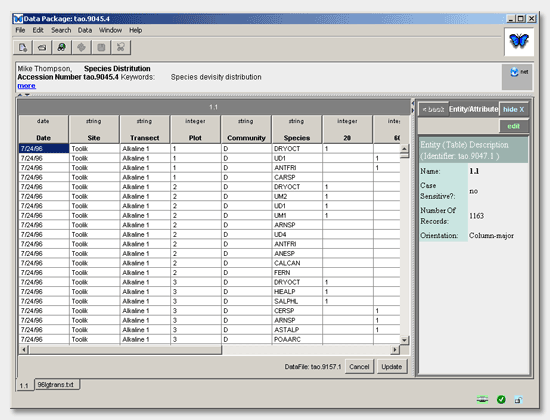
This screen consists of several parts: the menu and toolbar are at the top of the screen. Below these are three panels: the package documentation panel, the data table panel, and the table documentation panel. These are described below
Package Documentation Panel
The top panel contains a brief "citation-style" summary of the data package, with icons to indicate whether the package is located on the local machine, on the network, or both. Data packages, while created locally, can be uploaded to a network server to become a shared network Data Package. Data Packages are uploaded by choosing the 'File' menu, then clicking 'Synchronize'.
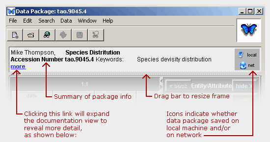
The top panel can be expanded to reveal more-detailed documentation, either by dragging the divider bar, or by clicking the "more" link. Doing the latter will expand the top panel as shown below:
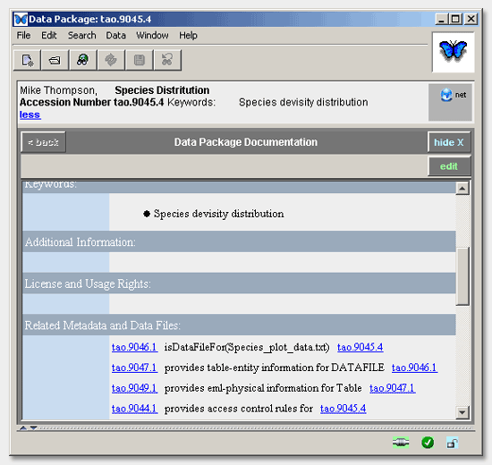
! note that clicking the blue links in this documentation window will cause the relevant part of the documentation to be displayed in the current panel. For example, clicking the "tao.9049.1" link in the above screen would cause the eml-physical documentation to be displayed. After navigating to different documentation pages, you can use the "back" button (near the top right corner of the panel) to navigate back to the initial view (this works in a similar way to a web-browser's "back" button ).
The panel may be closed down to its original size in one of several ways:
- by clicking the link again (which will now say "less" instead of "more"),
- by clicking the "hide" button that is located beneath the net/local icons
- by using the mouse to drag the divider bar, or
- by clicking the small arrow icons located on the divider bar.
The documentation may be edited by clicking the "edit" button that is located beneath the "hide" button.
Data Table Panel
The data table panel shows the data in spreadsheet form (this is for text data; if you have image entities, these will be displayed as images). The tabs along the bottom of the data table panel may be used to select and view different tables (entities) within the package:

You can click and edit data directly within the table cells. After editing the data, click the "update" button to save the changes, or "cancel" to undo. You can right-click on the table to bring up a menu which allows you to:
- sort columns
- insert and delete rows
- insert and delete columns
- add new tables
- add/edit documentation
These same options are available under the main "Data" menu at the top of the window.
Table Documentation Panel
The table documentation panel (to the right of the data table) initially displays documentation for the table that is currently being viewed.
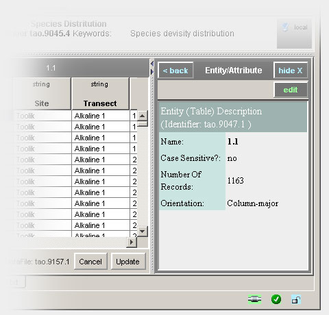
Clicking on any of the column headers in the table will cause the documentation panel to show information about the selected column (attribute). You can get back to the table (entity) documentation either by using the 'back' button (top left corner of this panel), or by clicking on the appropriate table selection tab at the bottom of the data table panel.
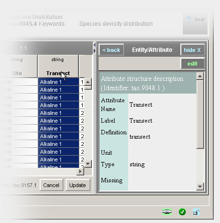
You can edit the currently-displayed documentation by clicking the 'edit' button (located beneath the 'hide' button). As with the other panels, this panel can be resized by dragging the dividing bars, and can be hidden or expanded fully clicking the arrows on the divider bars, or by clicking the 'hide' button at the top-right corner.
Open an Existing Data Package
Click the open button or from the File menu, choose "open". You will see a listing of the available packages:
Select a data package to open (or open the sample package titled "Population sampling data for zoo...")
Click the "open" button (or you can simply double-click the package, or right click and choose "open")
The icons in the first column of the 'open' screen tell you if the package contains:
| Data and documentation | Documentation only |
Icons in the last two columns indicate whether the package is located on the local machine or on the network (or both).
Search Interface
Click the search button
or use the search menu to begin the data package search
process. You will then see the search interface:

The search interface allows you to name the query ("Query
Title") in order to save it for repeated use. After you save it,
you can access it directly from the 'Search' menu on the main
menu bar at the top of each window.
The "catalog" and "local" checkboxes imply your search will occur both locally and on the KNB network. The tabs (Subject, Taxonomic, Spatial, Options) provide more detailed search criteria. After entering your search criteria your results are displayed as in the example below.
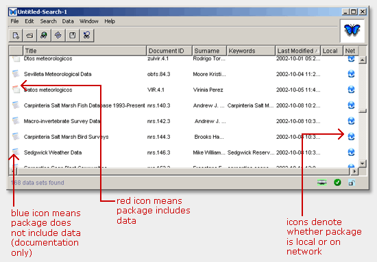
The icons in the first column of the search result screen tell you if the package contains:
| Data and documentation | Documentation only |
The
search buttons allow you to refresh the search, save the search for
future use, or revise the search by changing the search parameters.
These options are also available from the main 'Search' menu.
Similarly to uploading a data package, you can download a data package to your local PC from the network by right-clicking and selecting "Synchronize" or through the same option on the file menu. Notice you also have the option to delete data packages. You are only allowed to delete packages that you have created, or for which you have special permissions. See more on permissions
The Spatial Search Tab
If you select the "Spatial Search" tab you should see a screen like that shown below:

You can create a 'bounding box' like the one shown over the United
States by clicking somewhere on the map and then dragging with the
mouse still pressed. Releasing the mouse will then complete the action
and create a white rectangle like that shown. The latitude and longitude
values indicated by the sides of the box are shown in the text boxes
on the right. The box can be resized by dragging one of the white
squares on the corners, or moved by dragging the white square in the
center. You can also 'Zoom In' or 'Zoom Out' using the indicated buttons.
When the "Search" button is clicked, data packages will be queried
to find those packages that contain geographic latitude/longitude
coordinates inside the indicated bounding box.
 Previous
Creating
a New DataPackage
Previous
Creating
a New DataPackage